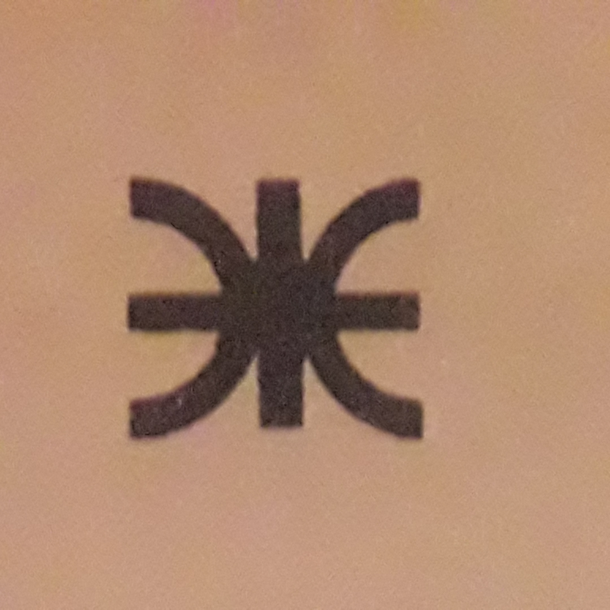
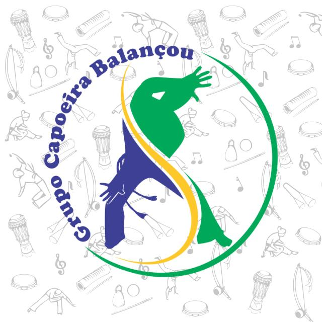
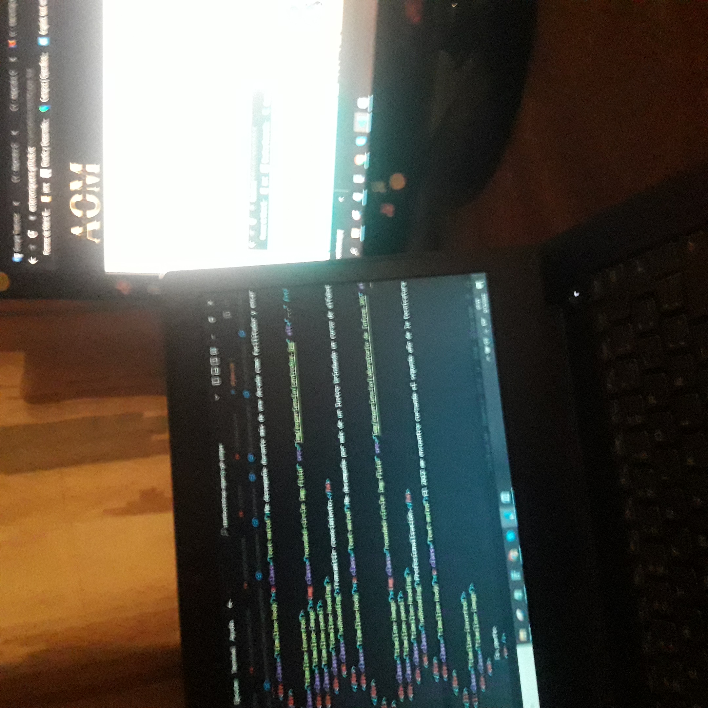

Mi camino
Explico como cultivo mis habilidades y destrezas.
-

Habilidades duras.
Curse ingeniería electrónica en la UTN. Tengo aprobadas las unidades curriculares correspondientes al ciclo común. Ellás me permitieron forjar el pensamiento abstracto con rigurosidad matemática.
-

Trabajo en equipo.
Practico capoeira, arte marcial brasileño que se realiza con acompañamiento musical y que se considera al mismo tiempo lucha y danza. En esta disciplina hay un momento de roda en el que se cumplen distintas funciones. Todas y cada una de las personas que se encuentran en la roda son importantes. Sus integrantes tienen que estar atentos entre sí para lograr que sea armoniosa y así alcanzar el objetivo.
-

Coordinación y administración.
Me desempeñé durante más de una década como facilitador y encargado de laboratorio de informática en el profesorado *de formación docente 'Nuestra Señora de la Misericordia', del barrio de Flores. Durante mi tiempo en dicha institución pude aprender a gestionar recursos materiales además de la resolución e intermediación en conflictos.
-

Transmitir conocimiento.
Me desempeñé por más de un lustro brindando un curso de alfabetización digital para adultos mayores en el Centro Personal Auxiliar de Seguridad y Defensa de la Policía Federal Argentina. Durante mi tiempo en el centro de auxiliares pude aprender a gestionar grupos heterogéneos, además de la construcción del conocimiento con sujetos noveles en la materia a tratar.
-

Profesionalisación.
El 2022 me encuentra cursando el segundo año de la Tecnicatura en Desarrollo de Software en la UADE y completando el primer tramo del trayecto de formación profesional en desarrollo de software en el CFP n°35. Asimismo finalizo el año con mi primer trabajo como desarrollador Front End.
-
Es parte
de mi
Camino!